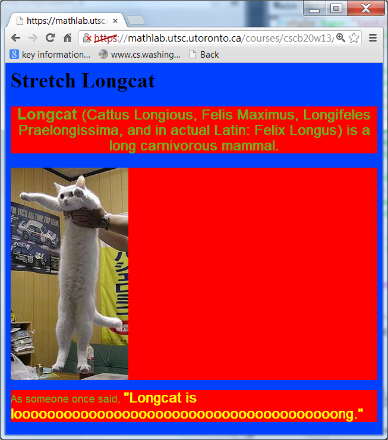
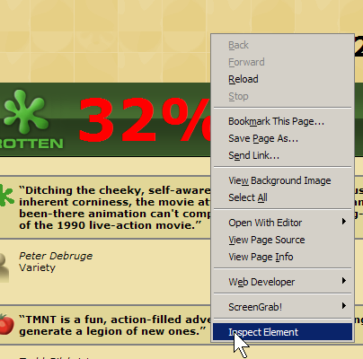

Asst 2 requires that you understand a little about the structure and meaning of an HTML document, but the starter.html file actually includes most of the HTML you'll need.
cd /courses/webspace/cscb20w17/YOUR_UTORid cp /courses/webspace/cscb20w17/bretsche/assignments/a2/fresh.html .You should now be able to load the starter page using a Web browser with this URL:
https://mathlab.utsc.utoronto.ca/courses/cscb20w17/YOUR_UTORid/fresh.htmlIf you get a "permission denied" response, make sure the starter file is readable to the Web server:
chmod go+r fresh.html
The main task for step 1 is to craft a Cascading Style Sheet that will render the fresh.html document to match the image shown on the handout. Let's examine some of the key CSS concepts that you'll have to master.
<div id="first_section"> ... other elements ... </div> <span id="first_phrase"> ... other elements ... </span> <div class="left_menu"> ... other elements ... </div> <span class="conspicuous"> ... other elements ... </span>We'll see below how to associate a style with div and span section elements. In Asst 2, you'll see many div elements in the starter page. Briefly, when a style is associated with a <div> or <span> section element, that same style is "inherited" by all the elements nested within that section element.
As shown in the lecture notes, the general form of a CSS style definition is:
selector { style_property: style_value; style_property: style_value; ... }
The "selector" identifies the part of an HTML element to which the enumerated style_properties are to apply. CSS provides a compact yet powerful set of selector types (summarized in the lecture slides). The "id" and "class" selectors are mentioned above, and these are the most important for Asst 2. Others that may come in handy are contextual selection and element-list selection.
Write a CSS selector for each of these element sets:
- h2
- #intro
- #intro h2
- #content h2, #footer h2
- #content p
- #content > p
- .bordered
- h2.bordered
<!DOCTYPE html>
<html>
<head>
<link href="boxes.css" type="text/css" rel="stylesheet" />
</head>
<body>
<div id="outer-box">
<div id="inner-box"></div>
</div>
</body>
</html>
The outer border of the box is red, the inner border of the box is black, and the inner background color of the box is yellow.
Both the outer and inner borders have a width of 50 pixels. The yellow
portion of the box has a width and height of 200 pixels. The overall box
has a width and height of 400 pixels.
body {
margin: 0;
padding: 0;
}
#outer-box {
background-color: red;
width: 300px;
height: 300px;
padding: 50px;
}
#inner-box {
background-color: yellow;
width: 200px;
height: 200px;
border: 50px solid black;
}
or
body {
margin: 0;
padding: 0;
}
#outer-box {
background-color: black;
width: 300px;
height: 300px;
border: 50px solid red;
}
#inner-box {
background-color: yellow;
width: 200px;
height: 200px;
margin: 50px;
}
... many other alternatives possible ...

<!DOCTYPE html>
<html>
<head>
</head>
<h1>Dogs are the best!!!</h1>
<body>
<h2>Why dogs are the best</h2>
<li>One, of all, they are cute.
<li>Two, they protect against meanies.
<li>Finally, CATS don't do either one or two!
<h2>Why cats are <em>NOT AS GOOD AS DOGS</h2></em>
<p>They are mean & they scratch.</p>
<h2>Dog pictures:
<img src="http://www.example.com/images/boxer.jpg">
</body>
</html>
</!DOCTYPE>
Once your CSS passes the validation check,
add a short comment header to the CSS code,
and a new CSS rule to justify the text in paragraphs (<p> elements)
with the CSS text-align and text-justify properties.
body {
background-color: white,
foreground-color: red;
}
h1 {
font-align: "centered";
}
h2 {
font-decoration; underlined;
}
li (
font-name: Times New Roman; serif;
)

{kind=link}